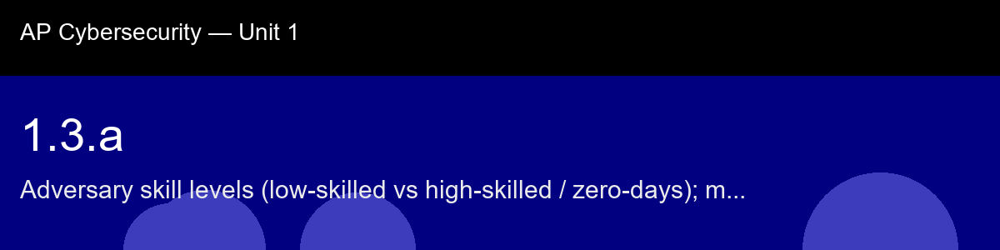

1.3.a, Adversary skill levels (low-skilled vs high-skilled / zero-days); motivation
Before class today. Not every attacker who shows up in a coffee shop with a laptop is equally dangerous. Understanding
the spectrum of adversary capability, from the curious teenager running a downloaded script to the
nation-state operator wielding a custom radio exploit, helps you calibrate risk realistically rather
than either dismissing it or treating every threat as equally catastrophic.
The intuition to hold onto: Resist the instinct to imagine every attacker as a hooded figure in a dark room running custom exploits. The honest picture is a long-tailed distribution: an enormous number of low-skilled opportunists running free tools against anyone in range, and a small number of well-resourced, patient operators aiming precisely at specific high-value targets. The threat you actually face on a given afternoon at a coffee shop is overwhelmingly the first kind, which is good news, because the defenses against low-skilled, high-volume attacks (a VPN, basic skepticism, avoiding open networks) are cheap and effective, unlike defending against a funded zero-day operator.
A myth worth busting before we start: "Hackers on public Wi-Fi are all elite geniuses." → Most opportunistic attacks use free, widely available tools. The ceiling is high, but the floor is very low.
Today's goal: Classify a wireless attacker by skill tier based on the tools and techniques they use, and explain how motivation shapes which public Wi-Fi threats you face in practice.
Handout: pre-lecture-handout.docx.

## 1.3.a, Adversary skill levels (low-skilled vs high-skilled / zero-days); motivation
**Before class today.** Not every attacker who shows up in a coffee shop with a laptop is equally dangerous. Understanding
the spectrum of adversary capability, from the curious teenager running a downloaded script to the
nation-state operator wielding a custom radio exploit, helps you calibrate risk realistically rather
than either dismissing it or treating every threat as equally catastrophic.
**The intuition to hold onto:** Resist the instinct to imagine every attacker as a hooded figure in a dark room running custom exploits. The honest picture is a long-tailed distribution: an enormous number of low-skilled opportunists running free tools against anyone in range, and a small number of well-resourced, patient operators aiming precisely at specific high-value targets. The threat you actually face on a given afternoon at a coffee shop is overwhelmingly the first kind, which is good news, because the defenses against low-skilled, high-volume attacks (a VPN, basic skepticism, avoiding open networks) are cheap and effective, unlike defending against a funded zero-day operator.
**A myth worth busting before we start:** "Hackers on public Wi-Fi are all elite geniuses." → Most opportunistic attacks use free, widely available tools. The ceiling is high, but the floor is very low.
**Today's goal:** Classify a wireless attacker by skill tier based on the tools and techniques they use, and explain how motivation shapes which public Wi-Fi threats you face in practice.
Handout: `pre-lecture-handout.docx`.